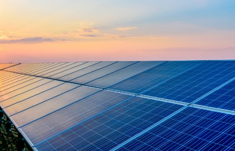

<!DOCTYPE html>
<html lang="pt-BR">
<head>
    <meta charset="UTF-8">
    <meta name="viewport" content="width=device-width, initial-scale=1.0">
    <title>geração de energia solar</title>
    <link rel="stylesheet" href="style.css">
</head>
<body>
    
</body>
</html>
<nav>
    <a href="index.html">O que é geração de energia elétrica</a>
    <a href="hidreletrica.html">O que é geração de energia
        hidroelétrica</a>
    <a href="termoeletrica.html">O que é geração de energia
        termoelétrica,</a>
    <a href="eolica.html">O que é geração de energia Eólica</a>
    <a href="solar.html">O que é geração de energia Solar,</a>
</nav>
<h1>O que é geração de energia Solar</h1>
<p>A energia solar é obtida diretamente pela incidência de raios do sol que são captados pelas placas fotovoltaicas, instaladas nos telhados das edificações. As duas principais maneiras de aproveitamento da energia solar são para a geração de energia elétrica e para o aquecimento de água.</p>
<h2>vantagens e desvantagens da energia solar</h2>
<p>a energia solar possui varias vantagens sendo elas não polui, é renovável, limpa e silenciosa, pode ser usada em áreas isoladas da rede elétrica, necessidade mínima de manutenção, muito fácil de instalar e é barato para manter.Entre as principais desvantagens da energia solar está o alto custo dos equipamentos devido à falta de incentivos governamentais, principalmente em sistemas à bateria que, apesar de serem uma solução ao problema da intermitência da energia solar, ainda possuem baixa eficiência no armazenamento.</p>
<div>
    
</div>
<small>Fonte:
    <a href="https://www.gazetadopovo.com.br/conteudo-publicitario/premium-solar/crescimento-do-mercado-de-energia-solar-no-brasil/">gazeta do povo</a>
</small>